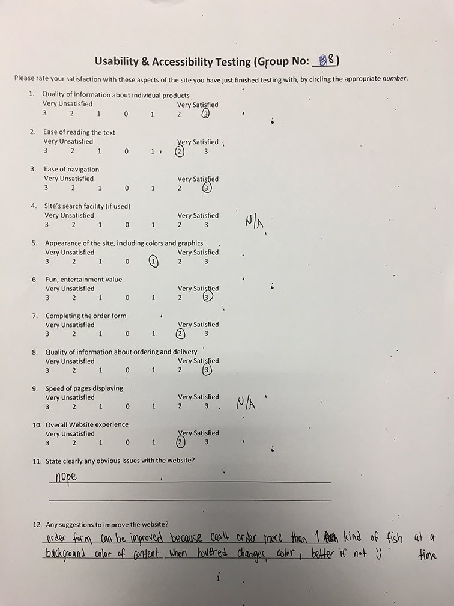
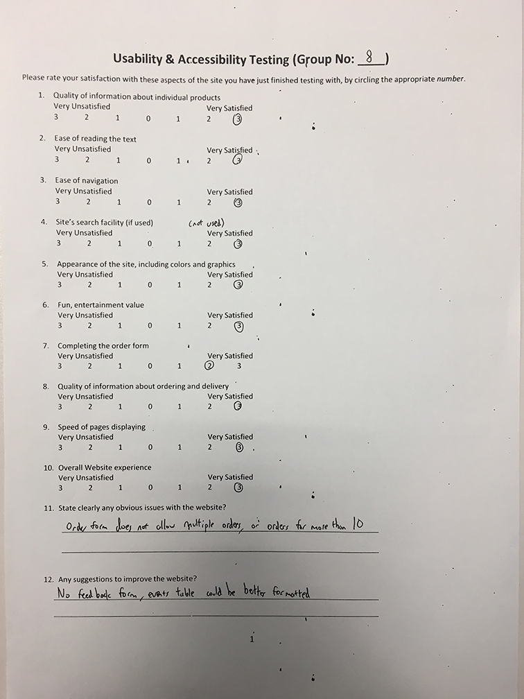
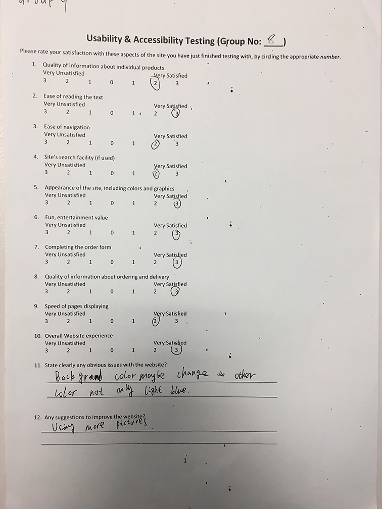

CP1406 - 2017 Group Project Report
Group Number 8
Members: Lee Vern Hoe, JinSup Song, Li Ruotong
GitHub
GitHub repository
Please list GitHub usernames with your own names if the usernames are not clearly identifiable.
Goals
Create a more attractive web page using the resources that existed in the old webpage. Designing the webpage that suits the target audience.
Completed Work by Who
brief details of who did what
- Lee Vern Hoe: Java script and creating modal
- JinSup Song: Template and CSS
- Li Ruotong: Creating structure of web page, Research and extracting details form old page
Testing Details



References
references (links) for any code, images or content that you have used that are not your own
- 600 Rio Water Pump [Digital image]. (2008, May & june). Retrieved May 20, 2017, from http://www.petmountain.com/photos/product/giant/114420S507412/-/rio-plus-600-200-gph-max-head-4-ft-.jpg
- Premium Fish Tank [Digital image]. (2013, Jan. & feb.). Retrieved May 20, 2017, from http://www.aqua-techuk.co.uk/sites/default/files/imagecache/product_full/EdgeBlack-no-fish.jpg
- Regular Fish Tank [Digital image]. (2014, July 17). Retrieved May 20, 2017, from https://ca-en.hagen.com/File/Image/m/980/530/b1a0dd49-ea93-4e14-b661-51b3e85c70b0
- Round Aquarium [Digital image]. (2014, May & june). Retrieved from https://ae01.alicdn.com/kf/HTB1Rt6OKpXXXXcYXVXXq6xXFXXX9/AQUARIUM-FISH-TANK-AQUARIUM-clear-glass-for-your-desk-decor-mini-Round-the-goldfish-bowl.jpg
- Water Pump [Digital image]. (2003, December 27). Retrieved May 21, 2017, fromhttp://thumbs.ebaystatic.com/images/g/ljwAAOSwxVpXMRHY/s-l225.jpg
- Loh, R. (2017, September 24). The Fish Vet. Retrieved May 22, 2017, from www.thefishvet.com.au
- Calculation for Java Script(2017,May 22).W3Schools from,https://www.w3schools.com/js/js_math.asp
- parsefloat (2017, May 22 2017). W3Schools from https://www.w3schools.com/jsref/jsref_parsefloat.asp
PMI
your group should spend some time reflecting on the process and describe here the Pluses, Minuses and Interesting
aspects of your teamwork process and result
Pluses: good communication among group members, there are no clashes on task, each member did their part as planned
Minuses: having hard time syncing changes to github and coding javascript due to lack of knowledge
Interesting: Cooperated well and everyone did and submit their own part on time, we have great time figuring ways to improve our webpage and solving errors during the process. (including significant lessons) ...